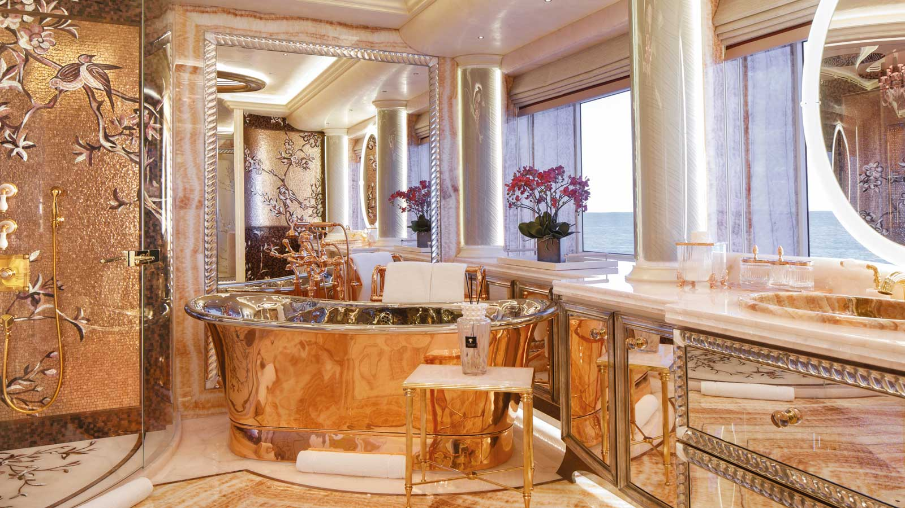
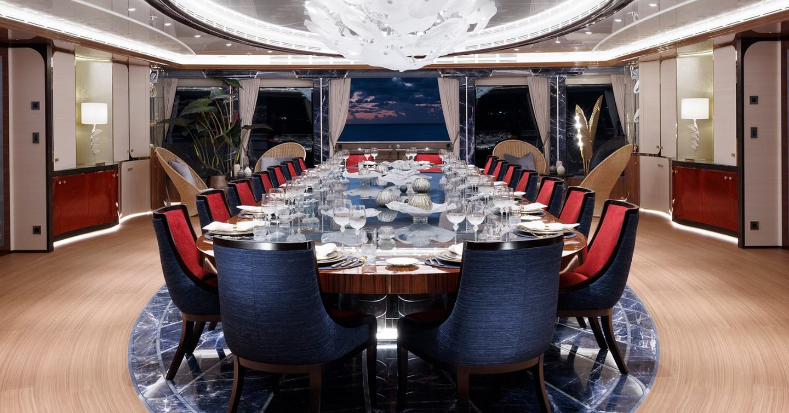

AHPO
INTERIOR
_____________________________________________________________________________________________________________________________________________________________________________________________

Wellnes Center
Area spa di dek bawah dirancang dengan estetika yang sangat menenangkan, menggunakan elemen bambu berlampu latar dan batu alam. Di sini terdapat hammam bergaya Turki yang dihiasi mosaik Sicis yang rumit, sauna garam Himalaya untuk relaksasi maksimal, serta ruang pijat khusus. Ruangan ini juga memiliki akses langsung ke Beach Club, sehingga setelah melakukan perawatan spa, tamu bisa langsung melangkah ke platform renang untuk merasakan kesegaran air laut.

Main Salon & Dinning
Ruang tamu utama memancarkan keanggunan formal dengan langit-langit tinggi dan furnitur kustom yang mengikuti lekukan kapal. Di tengah ruangan, terdapat piano self-playing Steinway yang memberikan latar musik otomatis, serta lampu gantung kristal yang megah. Area ini terhubung langsung dengan ruang makan formal yang mampu menampung banyak tamu, di mana meja makannya dikelilingi oleh dekorasi dinding bermotif alam yang memberikan kesan makan di tengah taman yang tenang.

Living Room
Kapal ini memiliki tujuh suite tamu tambahan yang masing-masing memiliki skema warna dan tema desain yang unik, sehingga setiap tamu merasakan pengalaman yang berbeda. Semua dek dihubungkan oleh sebuah lift kristal pusat dan tangga melingkar yang megah. Area tangga ini sendiri merupakan karya seni, dengan detail pegangan tangga yang dibungkus kulit dan ukiran marmer pada setiap anak tangga, memastikan bahwa setiap perpindahan antar ruang di dalam kapal terasa seperti sebuah perjalanan yang mewah.

Owner's Apartement
Kamar utama ini dirancang sebagai hunian dua lantai yang menawarkan privasi mutlak dan kemewahan luar biasa. Di lantai bawah, terdapat ruang tidur yang luas dengan pemandangan panorama 180 derajat, sementara tangga pribadi menghubungkan ke lantai atas yang berisi kantor eksklusif dan area lounge santai. Kamar mandinya menjadi pusat perhatian dengan penggunaan marmer onyx yang langka dan instalasi mosaik buatan tangan yang sangat detail, menciptakan suasana seperti berada di galeri seni pribadi.